Visual MCMC diagnostics using the bayesplot package
Jonah Gabry and Martin Modrák
Latest version: 2019-05-22
visual-mcmc-diagnostics.RmdIntroduction
This vignette focuses on MCMC diagnostic plots, in particular on diagnosing divergent transitions and on the n_eff and Rhat statistics that help you determine that the chains have mixed well. Plots of parameter estimates from MCMC draws are covered in the separate vignette Plotting MCMC draws, and graphical posterior predictive model checking is covered in the Graphical posterior predictive checks vignette.
Note that most of these plots can also be browsed interactively using the shinystan package.
Setup
In addition to bayesplot we’ll load the following packages:
- ggplot2, in case we want to customize the ggplot objects created by bayesplot
- rstan, for fitting the example models used throughout the vignette
Example model
Before we delve into the actual plotting we need to fit a model to have something to work with. In this vignette we’ll use the eight schools example, which is discussed in many places, including Rubin (1981), Gelman et al. (2013), and the RStan Getting Started wiki. This is a simple hierarchical meta-analysis model with data consisting of point estimates y and standard errors sigma from analyses of test prep programs in J=8 schools. Ideally we would have the full data from each of the previous studies, but in this case we only have the these estimates.
schools_dat <- list(
J = 8,
y = c(28, 8, -3, 7, -1, 1, 18, 12),
sigma = c(15, 10, 16, 11, 9, 11, 10, 18)
)The model is: \[ \begin{align*} y_j &\sim {\rm Normal}(\theta_j, \sigma_j), \quad j = 1,\dots,J \\ \theta_j &\sim {\rm Normal}(\mu, \tau), \quad j = 1, \dots, J \\ \mu &\sim {\rm Normal}(0, 10) \\ \tau &\sim {\rm half-Cauchy}(0, 10), \end{align*} \] with the normal distribution parameterized by the mean and standard deviation, not the variance or precision. In Stan code:
// Saved in 'schools_mod_cp.stan'
data {
int<lower=0> J;
vector[J] y;
vector<lower=0>[J] sigma;
}
parameters {
real mu;
real<lower=0> tau;
vector[J] theta;
}
model {
mu ~ normal(0, 10);
tau ~ cauchy(0, 10);
theta ~ normal(mu, tau);
y ~ normal(theta, sigma);
}This parameterization of the model is referred to as the centered parameterization (CP). We’ll also fit the same statistical model but using the so-called non-centered parameterization (NCP), which replaces the vector \(\theta\) with a vector \(\eta\) of a priori i.i.d. standard normal parameters and then constructs \(\theta\) deterministically from \(\eta\) by scaling by \(\tau\) and shifting by \(\mu\): \[ \begin{align*} \theta_j &= \mu + \tau \,\eta_j, \quad j = 1,\dots,J \\ \eta_j &\sim N(0,1), \quad j = 1,\dots,J. \end{align*} \] The Stan code for this model is:
// Saved in 'schools_mod_ncp.stan'
data {
int<lower=0> J;
vector[J] y;
vector<lower=0>[J] sigma;
}
parameters {
real mu;
real<lower=0> tau;
vector[J] eta;
}
transformed parameters {
vector[J] theta;
theta = mu + tau * eta;
}
model {
mu ~ normal(0, 10);
tau ~ cauchy(0, 10);
eta ~ normal(0, 1); // implies theta ~ normal(mu, tau)
y ~ normal(theta, sigma);
}The centered and non-centered are two parameterizations of the same statistical model, but they have very different practical implications for MCMC. Using the bayesplot diagnostic plots, we’ll see that, for this data, the NCP is required in order to properly explore the posterior distribution.
To fit both models we first translate the Stan code to C++ and compile it using the stan_model function.
schools_mod_cp <- stan_model("schools_mod_cp.stan")
schools_mod_ncp <- stan_model("schools_mod_ncp.stan")We then fit the model by calling Stan’s MCMC algorithm using the sampling function (the increased adapt_delta param is to make the sampler a bit more “careful” and avoid false positive divergences),
fit_cp <- sampling(schools_mod_cp, data = schools_dat, seed = 803214053, control = list(adapt_delta = 0.9))Warning: There were 110 divergent transitions after warmup. Increasing adapt_delta above 0.9 may help. See
http://mc-stan.org/misc/warnings.html#divergent-transitions-after-warmupWarning: There were 1 chains where the estimated Bayesian Fraction of Missing Information was low. See
http://mc-stan.org/misc/warnings.html#bfmi-lowWarning: Examine the pairs() plot to diagnose sampling problemsWarning in throw_sampler_warnings(nfit): Bulk Effective Samples Size (ESS) is too low, indicating posterior means and medians may be unreliable.
Running the chains for more iterations may help. See
http://mc-stan.org/misc/warnings.html#bulk-essWarning in throw_sampler_warnings(nfit): Tail Effective Samples Size (ESS) is too low, indicatingposterior variances and tail quantiles may be unreliable.
Running the chains for more iterations may help. See
http://mc-stan.org/misc/warnings.html#tail-essfit_ncp <- sampling(schools_mod_ncp, data = schools_dat, seed = 457721433, control = list(adapt_delta = 0.9))and extract a iterations x chains x parameters array of posterior draws with as.array,
# Extract posterior draws for later use
posterior_cp <- as.array(fit_cp)
posterior_ncp <- as.array(fit_ncp)You may have noticed the warnings about divergent transitions for the centered parametrization fit. Those are serious business and in most cases indicate that something is wrong with the model and the results should not be trusted. For an explanation of these warnings see Divergent transitions after warmup. We’ll have a look at diagnosing the source of the divergences first and then dive into some diagnostics that should be checked even if there are no warnings from the sampler.
Diagnostics for the No-U-Turn Sampler
The No-U-Turn Sampler (NUTS, Hoffman and Gelman, 2014) is the variant of Hamiltonian Monte Carlo (HMC) used by Stan and the various R packages that depend on Stan for fitting Bayesian models. The bayesplot package has special functions for visualizing some of the unique diagnostics permitted by HMC, and NUTS in particular. See Betancourt (2017), Betancourt and Girolami (2013), and Stan Development Team (2017) for more details on the concepts.
Documentation:
The special bayesplot functions for NUTS diagnostics are
bayesplot MCMC module:
(matching pattern '_nuts_')
mcmc_nuts_acceptance
mcmc_nuts_divergence
mcmc_nuts_energy
mcmc_nuts_stepsize
mcmc_nuts_treedepthThose functions require more information than simply the posterior draws, in particular the log of the posterior density for each draw and some NUTS-specific diagnostic values may be needed. The bayesplot package provides generic functions log_posterior and nuts_params for extracting this information from fitted model objects. Currently methods are provided for models fit using the rstan, rstanarm and brms packages, although it is not difficult to define additional methods for the objects returned by other R packages. For the Stan models we fit above we can use the log_posterior and nuts_params methods for stanfit objects:
Iteration Value Chain
1 1 -7.289305 1
2 2 -9.230824 1
3 3 -6.660970 1
4 4 -4.504500 1
5 5 -3.310762 1
6 6 -2.131661 1 Iteration Parameter Value Chain
1 1 accept_stat__ 0.9772738 1
2 2 accept_stat__ 0.8734830 1
3 3 accept_stat__ 0.9566386 1
4 4 accept_stat__ 0.5040941 1
5 5 accept_stat__ 0.5647954 1
6 6 accept_stat__ 0.7317091 1In addition to the NUTS-specific plotting functions, some of the general MCMC plotting functions demonstrated in the Plotting MCMC draws vignette also take optional arguments that can be used to display important HMC/NUTS diagnostic information. We’ll see examples of this in the next section on divergent transitions.
Divergent transitions
When running the Stan models above, there were warnings about divergent transitions. Here we’ll look at diagnosing the source of divergences through visualizations.
mcmc_parcoord
The parallel coordinates plot (mcmc_parcoord) is probably the first plot to have look at if you have no idea, where the divergences in your model might be coming from. This function works in general without including information about the divergences, but if the optional np argument is used to pass NUTS parameter information, then divergences will be colored in the plot (by default in red).
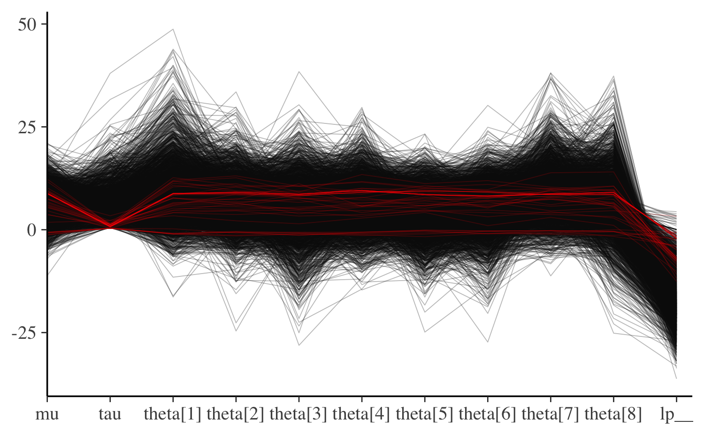
The mcmc_parcoord plot shows one line per iteration, connecting the parameter values at this iteration. This lets you see any global patterns in the divergences. Here, you may notice that divergences in the centered parameterization happen exclusively when tau, the hierarchical standard deviation, goes near zero and the values of the thetas are essentially fixed. This makes tau immediately suspect. See Gabry et al. (2019) for another example of the parallel coordinates plot.
mcmc_pairs
The mcmc_pairs function can be also be used to look at multiple parameters at once, but unlike mcmc_parcoord (which works well even when including several dozen parameters) mcmc_pairs is more useful for up to ~8 parameters. It shows univariate histograms and bivariate scatter plots for selected parameters and is especially useful in identifying collinearity between variables (which manifests as narrow bivariate plots) as well as the presence of multiplicative non-identifiabilities (banana-like shapes).
Let’s look at how tau interacts with other variables, using only one of the thetas to keep the plot readable:
mcmc_pairs(posterior_cp, np = np_cp, pars = c("mu","tau","theta[1]"),
off_diag_args = list(size = 0.75))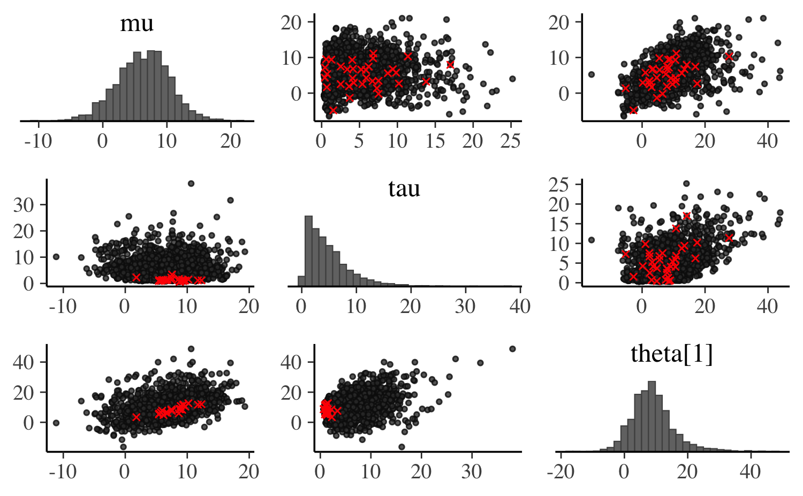
Note that each bivariate plot is present twice – by default each of those contain half of the chains, so you also get to see if the chains produced similar results (see the documentation for the condition argument for other options). Here, the interaction of tau and theta[1] seems most interesting, as it concentrates the divergences into a tight region.
Further examples of pairs plots and instructions for using the various optional arguments to mcmc_pairs are provided via help("mcmc_pairs").
mcmc_scatter
Using the mcmc_scatter function (with optional argument np) we can look at a single bivariate plot to investigate it more closely. For hierarchical models, a good place to start is to plot a “local” parameter (theta[j]) against a “global” scale parameter on which it depends (tau).
We will also use the transformations argument to look at the log of tau, as this is what Stan is doing under the hood for parameters like tau that have a lower bound of zero. That is, even though the draws for tau returned from Stan are all positive, the parameter space that the Markov chains actual explore is unconstrained. Transforming tau is not strictly necessary for the plot (often the plot is still useful without it) but plotting in the unconstrained is often even more informative.
First the plot for the centered parameterization:
# assign to an object so we can reuse later
scatter_theta_cp <- mcmc_scatter(
posterior_cp,
pars = c("theta[1]", "tau"),
transform = list(tau = "log"), # can abbrev. 'transformations'
np = np_cp,
size = 1
)
scatter_theta_cp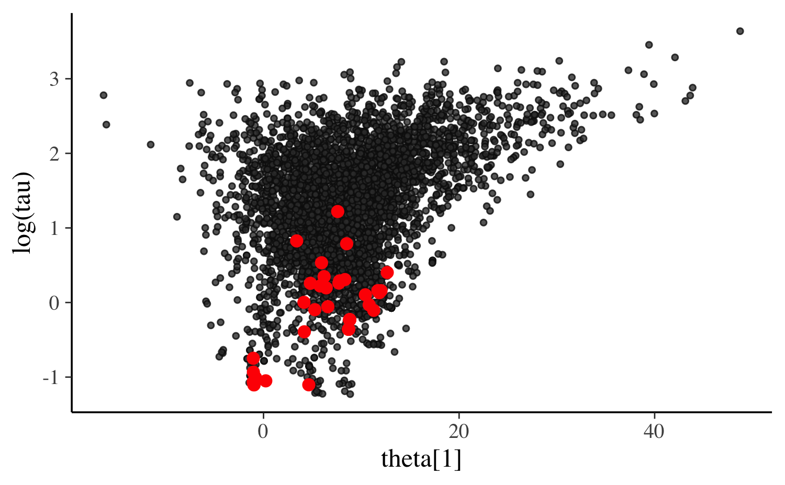
The shape of this bivariate distribution resembles a funnel (or tornado). This one in particular is essentially the same as an example referred to as Neal’s funnel (details in the Stan manual) and it is a clear indication that the Markov chains are struggling to explore the tip of the funnel, which is narrower than the rest of the space.
The main problem is that large steps are required to explore the less narrow regions efficiently, but those steps become too large for navigating the narrow region. The required step size is connected to the value of tau. When tau is large it allows for large variation in theta (and requires large steps) while small tau requires small steps in theta.
The non-centered parameterization avoids this by sampling the eta parameter which, unlike theta, is a priori independent of tau. Then theta is computed deterministically from the parameters eta, mu and tau afterwards. Here’s the same plot as above, but with eta[1] from non-centered parameterization instead of theta[1] from the centered parameterization:
scatter_eta_ncp <- mcmc_scatter(
posterior_ncp,
pars = c("eta[1]", "tau"),
transform = list(tau = "log"),
np = np_ncp,
size = 1
)
scatter_eta_ncp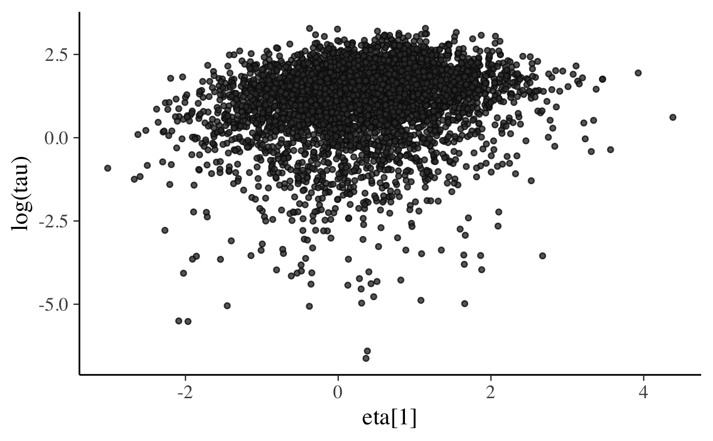
We can see that the funnel/tornado shape is replaced by a somewhat Gaussian blob/cloud and the divergences go away. Gabry et al. (2019) has further discussion of this example.
Ultimately we only care about eta insofar as it enables the Markov chains to better explore the posterior, so let’s directly examine how much more exploration was possible after the reparameterization. For the non-centered parameterization we can make the same scatterplot but use the values of theta[1] = mu + eta[1] * tau instead of eta[1]. Below is a side by side comparison with the scatterplot of theta[1] vs log(tau) from the centered parameterization that we made above. We will also force the plots to have the same \(y\)-axis limits, which will make the most important difference much more apparent:
# A function we'll use several times to plot comparisons of the centered
# parameterization (cp) and the non-centered parameterization (ncp). See
# help("bayesplot_grid") for details on the bayesplot_grid function used here.
compare_cp_ncp <- function(cp_plot, ncp_plot, ncol = 2, ...) {
bayesplot_grid(
cp_plot, ncp_plot,
grid_args = list(ncol = ncol),
subtitles = c("Centered parameterization",
"Non-centered parameterization"),
...
)
}
scatter_theta_ncp <- mcmc_scatter(
posterior_ncp,
pars = c("theta[1]", "tau"),
transform = list(tau = "log"),
np = np_ncp,
size = 1
)
compare_cp_ncp(scatter_theta_cp, scatter_theta_ncp, ylim = c(-8, 4))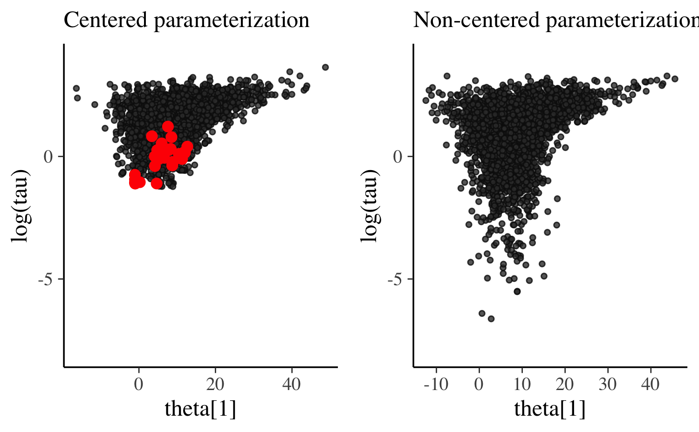
Once we transform the eta values into theta values we actually see an even more pronounced funnel/tornado shape than we have with the centered parameterization. But this is precisely what we want! The non-centered parameterization allowed us to obtain draws from the funnel distribution without having to directly navigate the curvature of the funnel. With the centered parameterization the chains never could make it into the neck of funnel and we see a clustering of divergences and no draws in the tail of the distribution.
mcmc_trace
Another useful diagnostic plot is the trace plot, which is a time series plot of the Markov chains. That is, a trace plot shows the evolution of parameter vector over the iterations of one or many Markov chains. The np argument to the mcmc_trace function can be used to add a rug plot of the divergences to a trace plot of parameter draws. Typically we can see that at least one of the chains is getting stuck wherever there is a cluster of many red marks.
Here is the trace plot for the tau parameter from the centered parameterization:
color_scheme_set("mix-brightblue-gray")
mcmc_trace(posterior_cp, pars = "tau", np = np_cp) +
xlab("Post-warmup iteration")The first thing to note is that all chains seem to be exploring the same region of parameter values, which is a good sign. But the plot is too crowded to help us diagnose divergences. We may however zoom in to investigate, using the window argument:
mcmc_trace(posterior_cp, pars = "tau", np = np_cp, window = c(50,200)) +
xlab("Post-warmup iteration")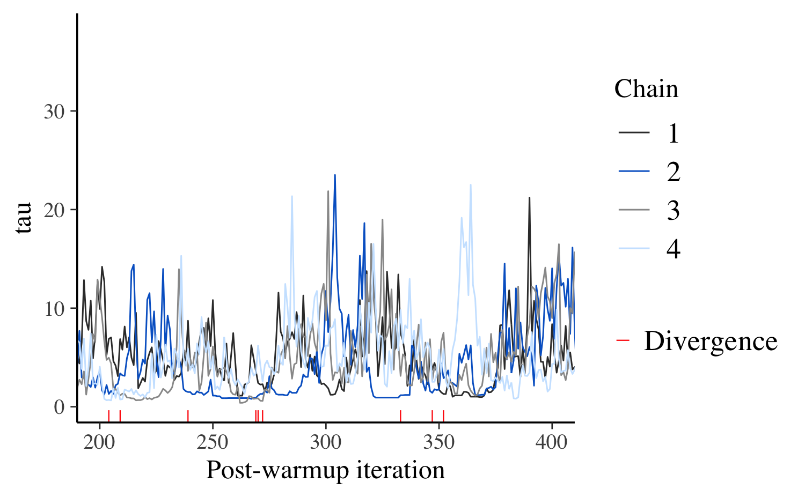
What we see here is that chains can get stuck as tau approaches zero and spend substantial time in the same region of the parameter space. This is just another indication that there is problematic geometry at \(\tau \simeq 0\) – healthy chains jump up and down frequently.
mcmc_nuts_divergence
To understand how the divergences interact with the model globally, we can use the mcmc_nuts_divergence function:
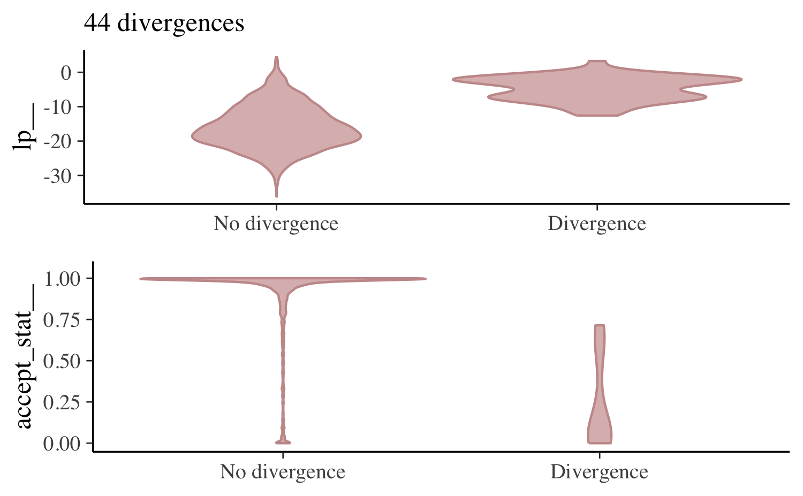
In the top panel we see the distribution of the log-posterior when there was no divergence vs the distribution when there was a divergence. Divergences often indicate that some part of the posterior isn’t being explored and the plot confirms that lp|Divergence indeed has lighter tails than lp|No divergence.
The bottom panel shows the same thing but instead of the log-posterior the NUTS acceptance statistic is shown.
Specifying the optional chain argument will overlay the plot just for a particular Markov chain on the plot for all chains combined:
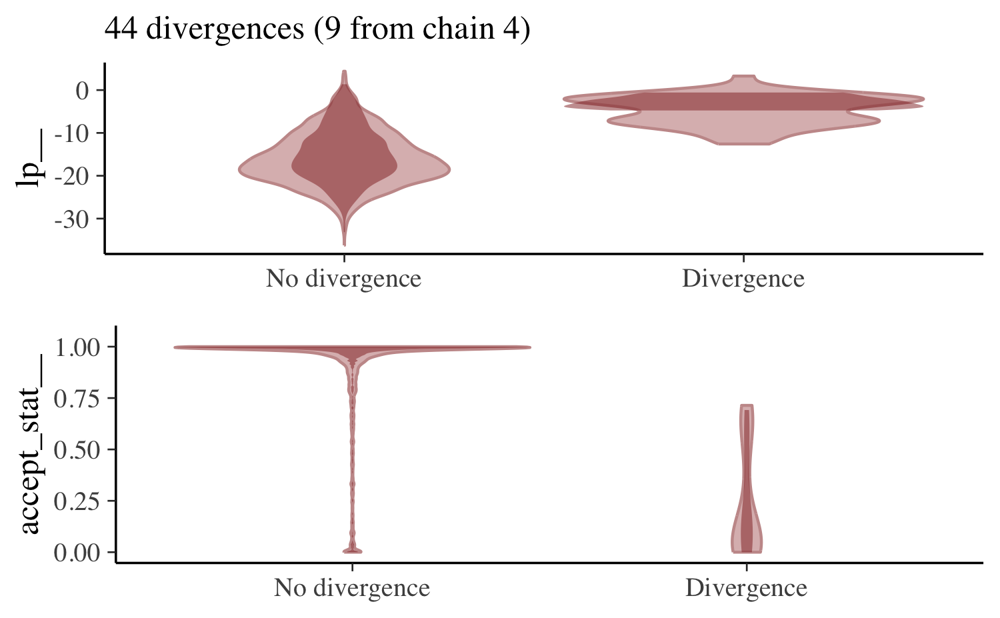
For the non-centered parameterization we may get a few warnings about divergences but if we do we’ll have far fewer of them to worry about.
If there are only a few divergences we can often get rid of them by increasing the target acceptance rate (adapt_delta, the upper limit is 1), which has the effect of lowering the step size used by the sampler and allowing the Markov chains to explore more complicated curvature in the target distribution.
fit_cp_2 <- sampling(schools_mod_cp, data = schools_dat,
control = list(adapt_delta = 0.999), seed = 978245244)Warning: There were 9 divergent transitions after warmup. Increasing adapt_delta above 0.999 may help. See
http://mc-stan.org/misc/warnings.html#divergent-transitions-after-warmupWarning: There were 2 chains where the estimated Bayesian Fraction of Missing Information was low. See
http://mc-stan.org/misc/warnings.html#bfmi-lowWarning: Examine the pairs() plot to diagnose sampling problemsWarning in throw_sampler_warnings(nfit): Bulk Effective Samples Size (ESS) is too low, indicating posterior means and medians may be unreliable.
Running the chains for more iterations may help. See
http://mc-stan.org/misc/warnings.html#bulk-essWarning in throw_sampler_warnings(nfit): Tail Effective Samples Size (ESS) is too low, indicatingposterior variances and tail quantiles may be unreliable.
Running the chains for more iterations may help. See
http://mc-stan.org/misc/warnings.html#tail-essfit_ncp_2 <- sampling(schools_mod_ncp, data = schools_dat,
control = list(adapt_delta = 0.999), seed = 843256842)For the first model and this particular data, increasing adapt_delta will not solve the problem and a reparameterization is required.
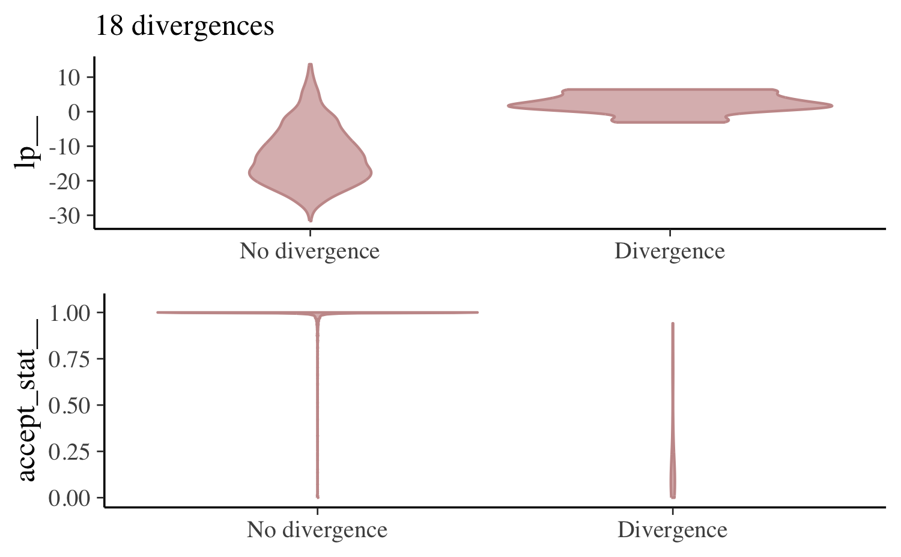
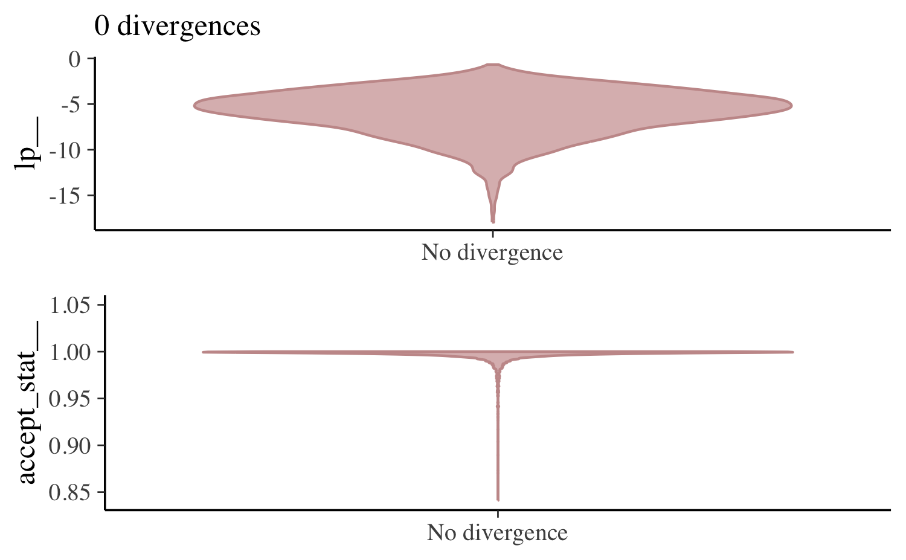
Energy and Bayesian fraction of missing information
The mcmc_nuts_energy function creates plots similar to those presented in Betancourt (2017). While mcmcm_nuts_divergence can identify light tails and incomplete exploration of the target distribution, the mcmc_nuts_energy function can identify overly heavy tails that are also challenging for sampling. Informally, the energy diagnostic for HMC (and the related energy-based Bayesian fraction of missing information) quantifies the heaviness of the tails of the posterior distribution.
mcmc_nuts_energy
The plot created by mcmc_nuts_energy shows overlaid histograms of the (centered) marginal energy distribution \(\pi_E\) and the first-differenced distribution \(\pi_{\Delta E}\),
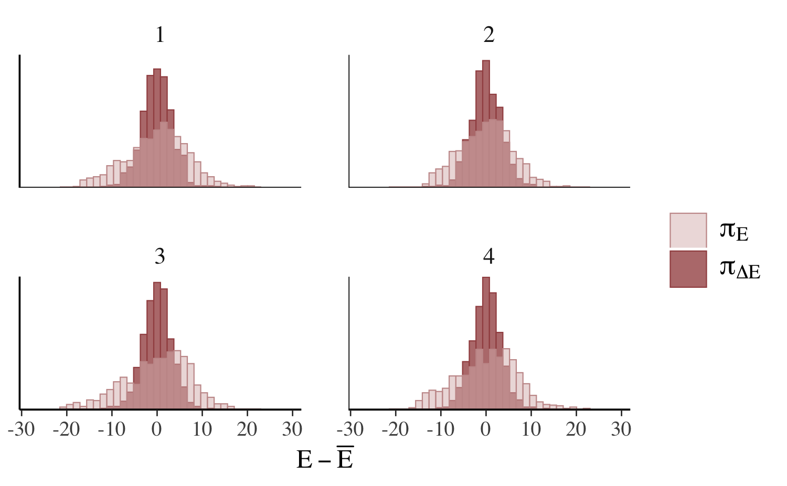
The two histograms ideally look the same (Betancourt, 2017), which is only the case for the non-centered parameterization (right):
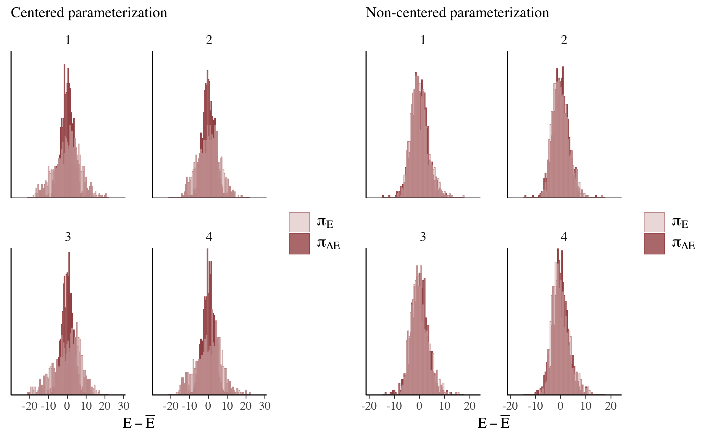
The difference between the parameterizations is even more apparent if we force the step size to a smaller value and help the chains explore more of the posterior:
np_cp_2 <- nuts_params(fit_cp_2)
np_ncp_2 <- nuts_params(fit_ncp_2)
compare_cp_ncp(
mcmc_nuts_energy(np_cp_2),
mcmc_nuts_energy(np_ncp_2)
)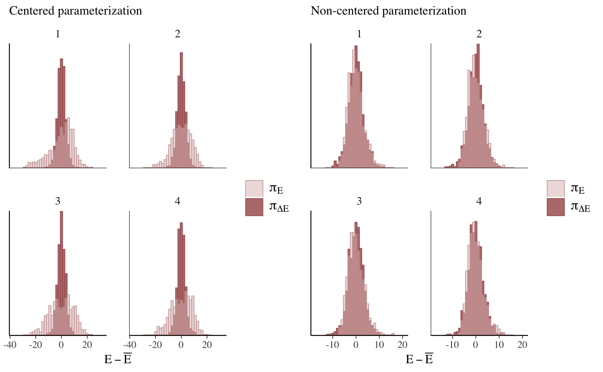
See Betancourt (2017) for more on this particular example as well as the general theory behind the energy plots.
General MCMC diagnostics
A Markov chain generates draws from the target distribution only after it has converged to an equilibrium. Unfortunately, this is only guaranteed in the limit in theory. In practice, diagnostics must be applied to monitor whether the Markov chain(s) have converged. The bayesplot package provides various plotting functions for visualizing Markov chain Monte Carlo (MCMC) diagnostics after fitting a Bayesian model. MCMC draws from any package can be used, although there are a few diagnostic plots that we will see later in this vignette that are specifically intended to be used for Stan models (or models fit using the same algorithms as Stan).
Documentation:
Rhat: potential scale reduction statistic
One way to monitor whether a chain has converged to the equilibrium distribution is to compare its behavior to other randomly initialized chains. This is the motivation for the potential scale reduction statistic, split-\(\hat{R}\). The split-\(\hat{R}\) statistic measures the ratio of the average variance of draws within each chain to the variance of the pooled draws across chains; if all chains are at equilibrium, these will be the same and \(\hat{R}\) will be one. If the chains have not converged to a common distribution, the \(\hat{R}\) statistic will be greater than one (see Gelman et al. 2013, Stan Development Team 2018).
The bayesplot package provides the functions mcmc_rhat and mcmc_rhat_hist for visualizing \(\hat{R}\) estimates.
First we’ll quickly fit one of the models above again, this time intentionally using too few MCMC iterations and allowing more dispersed initial values. This should lead to some high \(\hat{R}\) values.
fit_cp_bad_rhat <- sampling(schools_mod_cp, data = schools_dat,
iter = 50, init_r = 10, seed = 671254821)Warning: There were 44 transitions after warmup that exceeded the maximum treedepth. Increase max_treedepth above 10. See
http://mc-stan.org/misc/warnings.html#maximum-treedepth-exceededWarning: Examine the pairs() plot to diagnose sampling problemsWarning in throw_sampler_warnings(nfit): The largest R-hat is 2, indicating chains have not mixed.
Running the chains for more iterations may help. See
http://mc-stan.org/misc/warnings.html#r-hatWarning in throw_sampler_warnings(nfit): Bulk Effective Samples Size (ESS) is too low, indicating posterior means and medians may be unreliable.
Running the chains for more iterations may help. See
http://mc-stan.org/misc/warnings.html#bulk-essWarning in throw_sampler_warnings(nfit): Tail Effective Samples Size (ESS) is too low, indicatingposterior variances and tail quantiles may be unreliable.
Running the chains for more iterations may help. See
http://mc-stan.org/misc/warnings.html#tail-essbayesplot provides a generic rhat extractor function, currently with methods defined for models fit using the rstan, rstanarm and brms packages. But regardless of how you fit your model, all bayesplot needs is a vector of \(\hat{R}\) values.
mu tau theta[1] theta[2] theta[3] theta[4] theta[5] theta[6]
1.315405 1.407997 1.384731 1.132503 1.154874 1.247946 1.184952 1.552472
theta[7] theta[8] lp__
1.302898 1.224620 1.640462 mcmc_rhat, mcmc_rhat_hist
We can visualize the \(\hat{R}\) values with the mcmc_rhat function:
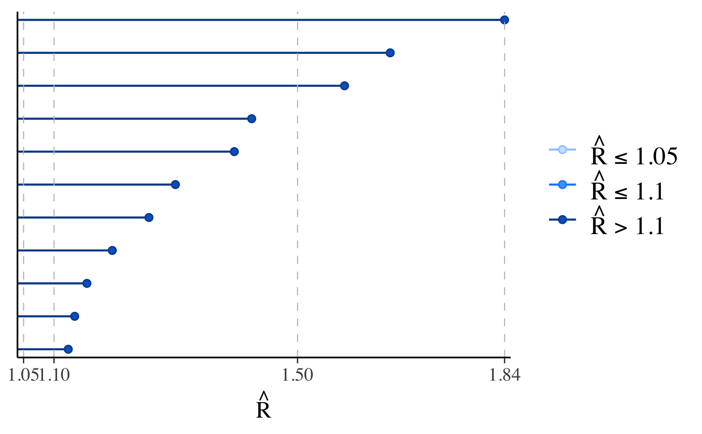
In the plot, the points representing the \(\hat{R}\) values are colored based on whether they are less than \(1.05\), between \(1.05\) and \(1.1\), or greater than \(1.1\). There is no theoretical reason to trichotomize \(\hat{R}\) values using these cutoffs, so keep in mind that this is just a heuristic
The axis \(y\)-axis text is off by default for this plot because it’s only possible to see the labels clearly for models with very few parameters. We can see the names of the parameters with the concerning \(\hat{R}\) values using the yaxis_text convenience function (which passes arguments like hjust to ggplot2::element_text):
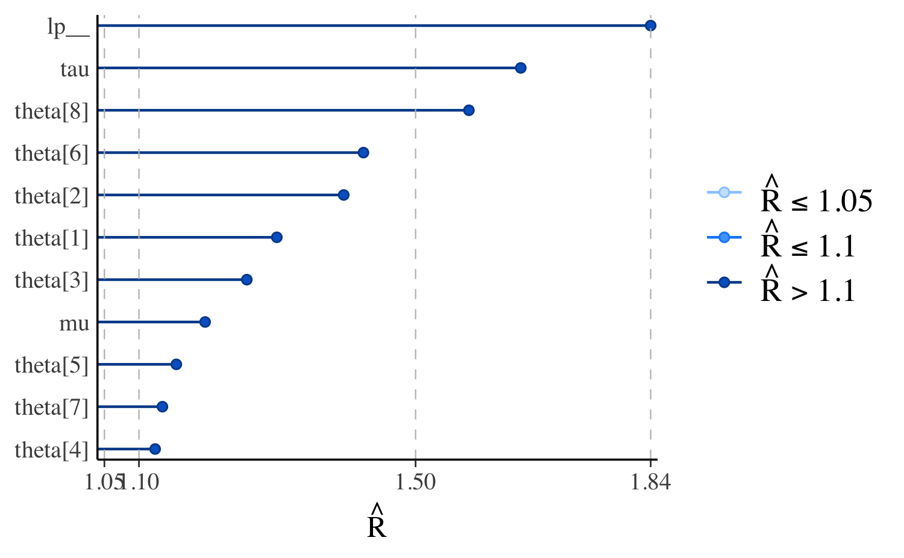
If we look at the same model fit using longer Markov chains we should see all \(\hat{R} < 1.1\), and all points in the plot the same (light) color:
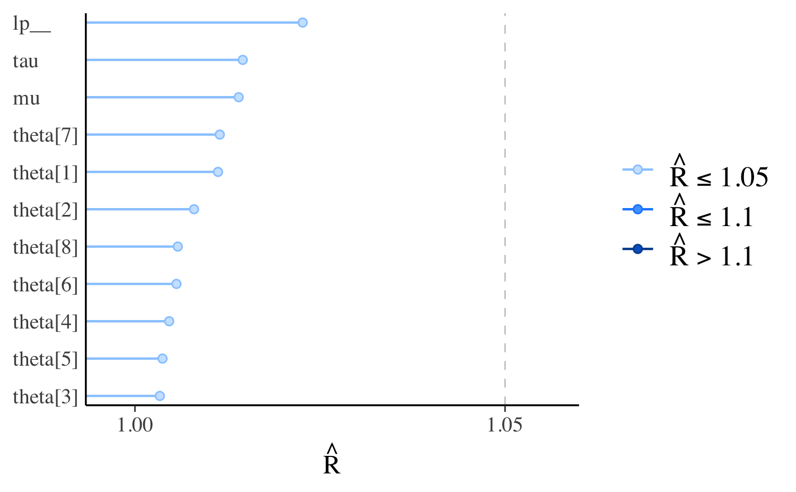
We can see the same information shown by mcmc_rhat but in histogram form using the mcmc_rhat_hist function. See the Examples section in help("mcmc_rhat_hist") for examples.
Effective sample size
The effective sample size is an estimate of the number of independent draws from the posterior distribution of the estimand of interest. The \(n_{eff}\) metric used in Stan is based on the ability of the draws to estimate the true mean value of the parameter, which is related to (but not necessarily equivalent to) estimating other functions of the draws. Because the draws within a Markov chain are not independent if there is autocorrelation, the effective sample size, \(n_{eff}\), is usually smaller than the total sample size, \(N\) (although it may be larger in some cases1). The larger the ratio of \(n_{eff}\) to \(N\) the better (see Gelman et al. 2013, Stan Development Team 2018 for more details) .
The bayesplot package provides a generic neff_ratio extractor function, currently with methods defined for models fit using the rstan, rstanarm and brms packages. But regardless of how you fit your model, all bayesplot needs is a vector of \(n_{eff}/N\) values. The mcmc_neff and mcmc_neff_hist can then be used to plot the ratios.
mcmc_neff, mcmc_neff_hist
mu tau theta[1] theta[2] theta[3] theta[4]
0.16326737 0.03865744 0.17761467 0.30843041 0.30284677 0.32133739
theta[5] theta[6] theta[7] theta[8] lp__
0.22057053 0.25827482 0.12920069 0.35235196 0.02039039 
In the plot, the points representing the values of \(n_{eff}/N\) are colored based on whether they are less than \(0.1\), between \(0.1\) and \(0.5\), or greater than \(0.5\). These particular values are arbitrary in that they have no particular theoretical meaning, but a useful heuristic is to worry about any \(n_{eff}/N\) less than \(0.1\).
One important thing to keep in mind is that these ratios will depend not only on the model being fit but also on the particular MCMC algorithm used. One reason why we have such high ratios of \(n_{eff}\) to \(N\) is that the No-U-Turn sampler used by rstan generally produces draws from the posterior distribution with much lower autocorrelations compared to draws obtained using other MCMC algorithms (e.g., Gibbs).
Even for models fit using rstan the parameterization can make a big difference. Here are the \(n_{eff}/N\) plots for fit_cp and fit_ncp side by side.
neff_cp <- neff_ratio(fit_cp, pars = c("theta", "mu", "tau"))
neff_ncp <- neff_ratio(fit_ncp, pars = c("theta", "mu", "tau"))
compare_cp_ncp(mcmc_neff(neff_cp), mcmc_neff(neff_ncp), ncol = 1)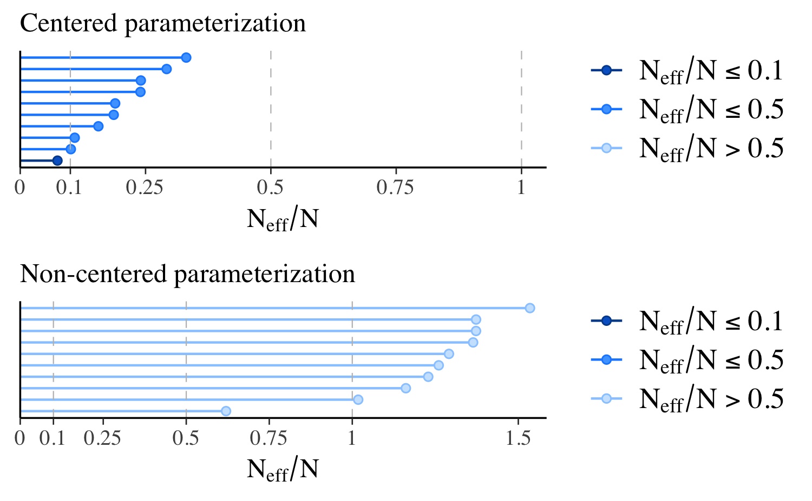
Because of the difference in parameterization, the effective sample sizes are much better for the second model, the non-centered parameterization.
Autocorrelation
As mentioned above, \(n_{eff}/N\) decreases as autocorrelation becomes more extreme. We can visualize the autocorrelation using the mcmc_acf (line plot) or mcmc_acf_bar (bar plot) functions. For the selected parameters, these functions show the autocorrelation for each Markov chain separately up to a user-specified number of lags. Positive autocorrelation is bad (it means the chain tends to stay in the same area between iterations) and you want it to drop quickly to zero with increasing lag. Negative autocorrelation is possible and it is useful as it indicates fast convergence of sample mean towards true mean.
mcmc_acf, mcmc_acf_bar
Here we can again see a difference when comparing the two parameterizations of the same model. For model 1, \(\theta_1\) is the primitive parameter for school 1, whereas for the non-centered parameterization in model 2 the primitive parameter is \(\eta_1\) (and \(\theta_1\) is later constructed from \(\eta_1\), \(\mu\), and \(\tau\)):
compare_cp_ncp(
mcmc_acf(posterior_cp, pars = "theta[1]", lags = 10),
mcmc_acf(posterior_ncp, pars = "eta[1]", lags = 10)
)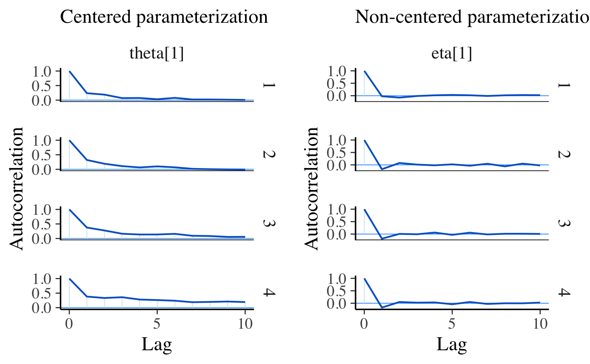
References
Betancourt, M. (2017). A conceptual introduction to Hamiltonian Monte Carlo. https://arxiv.org/abs/1701.02434
Betancourt, M. (2016). Diagnosing suboptimal cotangent disintegrations in Hamiltonian Monte Carlo. https://arxiv.org/abs/1604.00695
Betancourt, M. and Girolami, M. (2013). Hamiltonian Monte Carlo for hierarchical models. https://arxiv.org/abs/1312.0906
Gabry, J., and Goodrich, B. (2018). rstanarm: Bayesian Applied Regression Modeling via Stan. R package version 2.17.4. https://mc-stan.org/rstanarm
Gabry, J. , Simpson, D. , Vehtari, A. , Betancourt, M. and Gelman, A. (2019), Visualization in Bayesian workflow. J. R. Stat. Soc. A, 182: 389-402. :10.1111/rssa.12378. (journal version, arXiv preprint, code on GitHub)
Gelman, A. and Rubin, D. B. (1992). Inference from iterative simulation using multiple sequences. Statistical Science. 7(4): 457–472.
Gelman, A., Carlin, J. B., Stern, H. S., Dunson, D. B., Vehtari, A., and Rubin, D. B. (2013). Bayesian Data Analysis. Chapman & Hall/CRC Press, London, third edition.
Hoffman, M. D. and Gelman, A. (2014). The No-U-Turn Sampler: adaptively setting path lengths in Hamiltonian Monte Carlo. Journal of Machine Learning Research. 15:1593–1623.
Rubin, D. B. (1981). Estimation in Parallel Randomized Experiments. Journal of Educational and Behavioral Statistics. 6:377–401.
Stan Development Team. Stan Modeling Language Users Guide and Reference Manual. https://mc-stan.org/users/documentation/
Stan Development Team. (2018). RStan: the R interface to Stan. R package version 2.17.3. https://mc-stan.org/rstan
\(n_{eff} > N\) indicates that the mean estimate of the parameter computed from Stan draws approaches the true mean faster than the mean estimate computed from independent samples from the true posterior (the estimate from Stan has smaller variance). This is possible when the draws are anticorrelated - draws above the mean tend to be well matched with draws below the mean. Other functions computed from draws (quantiles, posterior intervals, tail probabilities) may not necessarily approach the true posterior faster. Google “antithetic sampling” or visit the relevant forum thread for some further explanation.↩